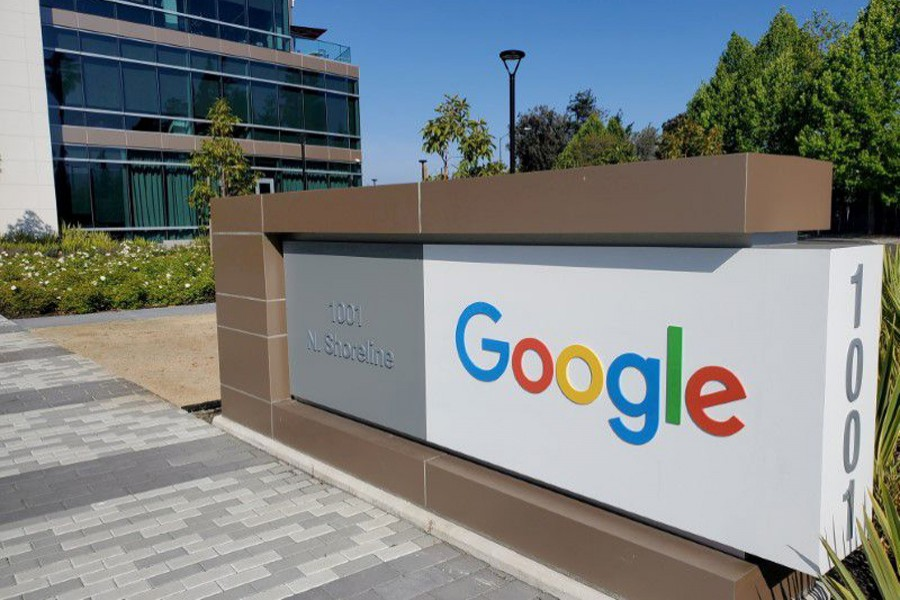
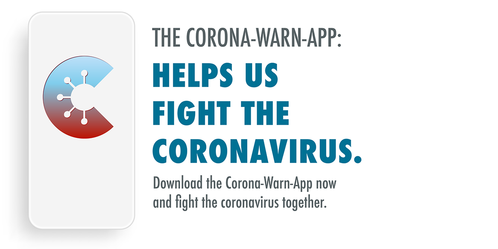

Gain different types of feelings on the way of learning web development.
Be Relax By Express and Share Your Feelings for Removing Stress.

I
Be Relax By Express and Share Your Feelings for Removing Stress.
Life is is very mysterious subject. Everyday many people live in the earth with various types of stress . Because, everyday they struggle in the earth for leading better life. Moreover, as a result, At one time , the feel suffer more and more stress. As a result, at one point they lose interest in life. Some commit suicide, and many become addicted to various neurotransmitter drugs that are harmful to the body. Threatening themselves, family and society. So everyone is trying to find a way to live with a peaceful. And relax body and mind free from various pressures.
First of all share your feelings. Be relax be express and share your feelings . In addition , it is absolutely verifiable that, when we express and share our emotion to other . It helps us to remove our emotional and physical stress and also keep relax our mind.
When you share your feelings with your faithful friends. It helps you to get inspiration and better cooperation.
Realization Make New Idea For Covering Failure

As a human being in the world we have to face different kinds of barrier on the way of success. It is accurate that these types of barricade make new feelings and realization in our mind. As a result we seek new way to change our current situation. It is true that whenever we try to change our current situation, we have to face different kinds of adversities, including financial, social. And we have to face the adversity caused by more different types of situation.
These blockade in most of the time not only comes from other environment but also sometimes family. Moreover, inspite of different bunker on the way of achieving goal some people overcome these obstacles. but most of the people in our society can not conquer it . There are many reasons behind the matter .
First is that, lack of proper plan. In addition insufficient hard work for the success. Moreover, incapability of discover reasons for failure of the work. On the other hand , veritable realization of failure .
There are diffrent opinion about realization.
Getting Respect and Inspire Other Always Depend on Love More Yourself .

Respect and Inspire both are very popular worldwide in human society. Because, everybody want to be respectful person and also inspire other. But both are related to human condition basis proper activites. It’s simple example: Love Yourself More . In addition, if you like to achieve respect from other. First of all, you must love yourself . For instance: you must take care of your physical and mental health. As well as, you have to gain knowledge for your mental development and also spread your knowledge through your society people.
Moreover, it is essential truth that if you be delighted then you can delighted other. Nonetheless, it can be easily tell that all effort may be fruitless. In addition, we have to believe that people follow instinctively. Thus, everywhere we have to try to be perfect for influencing other.
As well as, for these reasons, everywhere in the world who are successful people .people only they can influenced other. Besides, they have been good leader of the human society.
Make new idea for contributing yourself and society
Web developemnt is the best way for utilize your thinking and creativity.Moreover, it is sure that world wide tech person is very influential in their society.Because of best level use of their thinking and contributing for the society.
I feel always how to better use my self according to menatal tendency characteristics.Once upon a time I found himself that creative work is my favourite, then I choose web developement and design is perfect for me.For this reason now I learning web design and development.
I believe that I must success to touch my goal. I also know that Programming Hero is the best place for learning web developments.
Read More

Make application for public interest not only for you
It is undoubtedly true that as a creative profession it is very attractive. A creative developer can contribute the country and world easily making most beneficial application for the interest of mass people.
For exapmle, world wide corona virus apps help the people to know easily about corona virus position. In consequence people and government could take necessary steps against it.
More who are web developer they make many application for the interest of individual earning money. But sometimes they have to think public interest in national crisis moment. Then they have to make necessary steps so that mass people benefitted the apps. Because of there many featurethese apps.
Read More